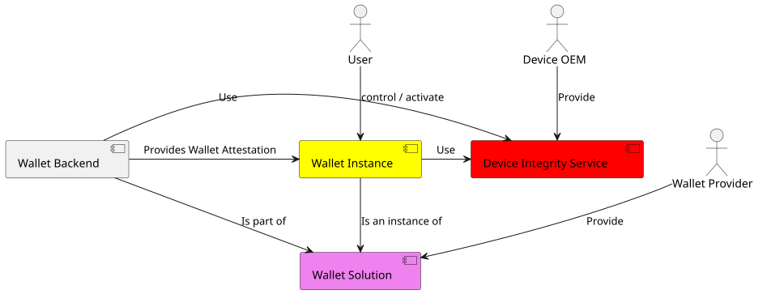
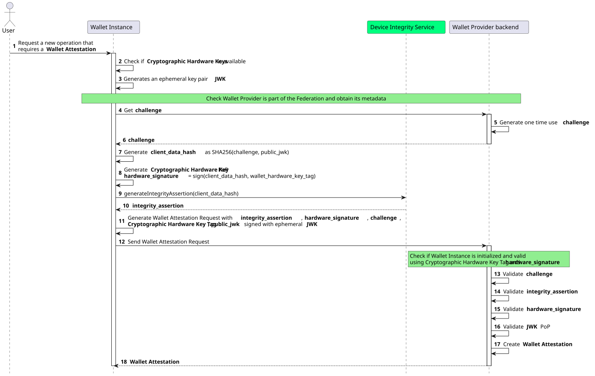

Wallet Attestation¶
Wallet Attestation contains information regarding the security level of the device hosting the Wallet Instance. It primarily certifies the authenticity, integrity, security, privacy, and trustworthiness of a particular Wallet Instance.

Wallet Attestation Requirements¶
The requirements for the Wallet Attestation are defined below:
The Wallet Attestation MUST contain a Wallet Instance public key.
The Wallet Attestation MUST use the signed JSON Web Token (JWT) format;
The Wallet Attestation MUST provide all the relevant information to attest to the integrity and security of the device where the Wallet Instance is installed.
The Wallet Attestation MUST be signed by the Wallet Provider that has authority over and is the owner of the Wallet Solution, as specified by the overseeing registration authority. This ensures that the Wallet Attestation uniquely links the Wallet Provider to this particular Wallet Instance.
The Wallet Provider MUST ensure the integrity, authenticity, and genuineness of the Wallet Instance, preventing any attempts at manipulation or falsification by unauthorized third parties. The Wallet Provider MUST also verify the Wallet Instance using the App Store vendor's API, such as the Play Integrity API for Android and DeviceCheck for iOS. These services are defined in this specification as Device Integrity Service (DIS).
The Wallet Attestation MUST have a mechanism in place for revoking the Wallet Instance, allowing the Wallet Provider to terminate service for a specific instance at any time.
The Wallet Attestation MUST be securely bound to the Wallet Instance's ephemeral public key.
The Wallet Attestation MAY be used multiple times during its validity period, allowing for repeated authentication and authorization without the need to request new attestations with each interaction.
The Wallet Attestation MUST be short-lived and MUST have an expiration date/time, after which it SHOULD no longer be considered valid.
The Wallet Attestation MUST NOT be issued by the Wallet Provider if the authenticity, integrity, and genuineness are not guaranteed. In this case, the Wallet Instance MUST be revoked.
Each Wallet Instance SHOULD be able to request multiple attestations with different ephemeral public keys associated with them. This requirement provides a privacy-preserving measure, as the public key MAY be used as a tracking tool during the presentation phase (see also the point listed below).
The Wallet Attestation MUST NOT contain any information that can be used to directly identify the User.
The Wallet Instance MUST secure a Wallet Attestation as a prerequisite for transitioning to the Operational state, as defined by ARF.
Private keys MUST be generated and stored in the WSCD using at least one of the approaches listed below:
Local Internal WSCD: The WSCD relies entirely on the device's native cryptographic hardware, such as the Secure Enclave on iOS devices or the Hardware-Backed Keystore or Strongbox on Android devices.
Local External WSCD: The WSCD is hardware external to the User's device, such as a smart card compliant with GlobalPlatform and supporting JavaCard.
Remote WSCD: The WSCD utilizes a remote Hardware Security Module (HSM).
Local Hybrid WSCD: The WSCD involves a pluggable internal hardware component within the User's device, such as an eUICC that adheres to GlobalPlatform standards and supports JavaCard.
Remote Hybrid WSCD: The WSCD involves a local component mixed with a remote service.
The Wallet Provider MUST offer a set of services, exclusively available to its Wallet Solution instances, for the issuance of Wallet Attestations.
Warning
At the current stage, the implementation profile defined in this document supports only the Local Internal WSCD. Future versions of this specification MAY include other approaches depending on the required AAL.
Wallet Attestation Issuance¶
This section describes the Wallet Attestation format and how the Wallet Provider issues it.

Step 1: The User initiates a new operation that necessitates the acquisition of a Wallet Attestation.
Steps 2-3: The Wallet Instance MUST:
Verify the existence of Cryptographic Hardware Keys. If none exist, Wallet Instance re-initialization is required.
Generate an ephemeral asymmetric key pair for Wallet Attestation, linking the public key to the attestation.
Verify the Wallet Provider's federation membership and retrieve its metadata.
Steps 4-6: The Wallet Instance solicits a one-time "challenge" from the nonce endpoint of the Wallet Provider Backend. This "challenge" takes the form of a nonce, which is required to be unpredictable and serves as the main defense against replay attacks.
The nonce MUST be produced in a manner that ensures its single-use within a predetermined time frame.
GET /nonce HTTP/1.1
Host: walletprovider.example.com
HTTP/1.1 200 OK
Content-Type: application/json
{
"nonce": "d2JhY2NhbG91cmVqdWFuZGFt"
}
If an error occurs during nonce generation, the Wallet Provider MUST return an error response.
Step 7: The Wallet Instance performs the following actions:
Creates
client_data, a JSON object that includes the challenge and the thumbprint of ephemeral publicjwk.Computes
client_data_hashby applying theSHA256algorithm to theclient_data.
Below is a non-normative example of the client_data JSON object.
{
"challenge": "0fe3cbe0-646d-44b5-8808-917dd5391bd9",
"jwk_thumbprint": "vbeXJksM45xphtANnCiG6mCyuU4jfGNzopGuKvogg9c"
}
Steps 8-10: The Wallet Instance:
produces an
hardware_signaturevalue by signing theclient_data_hashwith the Wallet Hardware's private key, serving as a proof of possession for the Cryptographic Hardware Keys.requests the Device Integrity Service to create an
integrity_assertionvalue linked to theclient_data_hash.receives a signed
integrity_assertionvalue from the Device Integrity Service, authenticated by the OEM.
Note
integrity_assertion is a custom payload generated by Device Integrity Service, signed by device OEM and encoded in base64 to have uniformity between different devices.
Steps 11-12: The Wallet Instance:
Constructs the Wallet Attestation Request in the form of a JWT. This JWT includes the
integrity_assertion,hardware_signature,challenge,hardware_key_tag,cnfand other configuration related parameters (see Table of the Wallet Attestation Request Body below) and is signed using the private key of the initially generated ephemeral key pair.Submits the Wallet Attestation Request to the wallet-attestation endpoint of the Wallet Provider Backend.
Below is a non-normative example of the Wallet Attestation Request JWT without encoding and signature applied:
{
"alg": "ES256",
"kid": "vbeXJksM45xphtANnCiG6mCyuU4jfGNzopGuKvogg9c",
"typ": "war+jwt"
}
.
{
"iss": "https://wallet-provider.example.org/instance/vbeXJksM45xphtANnCiG6mCyuU4jfGNzopGuKvogg9c",
"sub": "https://wallet-provider.example.org/",
"challenge": "6ec69324-60a8-4e5b-a697-a766d85790ea",
"hardware_signature": "KoZIhvcNAQcCoIAwgAIB...redacted",
"integrity_assertion": "o2NmbXRvYXBwbGUtYXBwYX...redacted",
"hardware_key_tag": "WQhyDymFKsP95iFqpzdEDWW4l7aVna2Fn4JCeWHYtbU=",
"cnf": {
"jwk": {
"crv": "P-256",
"kty": "EC",
"x": "4HNptI-xr2pjyRJKGMnz4WmdnQD_uJSq4R95Nj98b44",
"y": "LIZnSB39vFJhYgS3k7jXE4r3-CoGFQwZtPBIRqpNlrg"
}
},
"vp_formats_supported": {
"jwt_vc_json": {
"alg_values_supported": ["ES256K", "ES384"]
},
"jwt_vp_json": {
"alg_values_supported": ["ES256K", "EdDSA"]
},
},
},
authorization_endpoint": "https://wallet-solution.digital-strategy.europa.eu/authorization",
"response_types_supported": [
"vp_token"
],
"response_modes_supported": [
"form_post.jwt"
],
"request_object_signing_alg_values_supported": [
"ES256"
],
"presentation_definition_uri_supported": false,
"iat": 1686645115,
"exp": 1686652315
}
The Wallet Instance MUST send an HTTP request to the Wallet Provider's wallet-attestation endpoint, using the POST method with Content-Type application/json. The request body MUST contain an assertion parameter whose value is the signed JWT of the Wallet Attestation Request.
POST /wallet-attestation HTTP/1.1
Host: wallet-provider.example.org
Content-Type: application/json
{
"assertion": "eyJhbGciOiJFUzI1NiIsImtpZCI6ImtoakZWTE9nRjNHeG..."
}
Steps 13-17: The Wallet Provider Backend evaluates the Wallet Attestation Request and MUST perform the following checks:
The request MUST include all required HTTP header parameters as defined in Table of the Wallet Attestation Request Header.
The signature of the Wallet Attestation Request MUST be valid and verifiable using the provided
jwk.The
challengevalue MUST have been generated by the Wallet Provider and not previously used.A valid and currently registered Wallet Instance associated with the provided MUST exist.
The
client_dataMUST be reconstructed using thechallengeand thejwkpublic key. Thehardware_signatureparameter value is then validated using the registered Cryptographic Hardware Key's public key associated with the Wallet Instance.The
integrity_assertionMUST be validated according to the device manufacturer's guidelines. The specific checks performed by the Wallet Provider are detailed in the operating system manufacturer's documentation.The device in use MUST be free of known security flaws and meet the minimum security requirements defined by the Wallet Provider.
The URL in the
issparameter MUST match the Wallet Provider's URL identifier.
Upon successful completion of all checks, the Wallet Provider issues a Wallet Attestation valid for a maximum of 24 hours.
Below is a non-normative example of the Wallet Attestation without encoding and signature applied:
{
"alg": "ES256",
"kid": "5t5YYpBhN-EgIEEI5iUzr6r0MR02LnVQ0OmekmNKcjY",
"trust_chain": [
"eyJhbGciOiJFUz...6S0A",
"eyJhbGciOiJFUz...jJLA",
"eyJhbGciOiJFUz...H9gw",
],
"typ": "wallet-attestation+jwt",
}
.
{
"iss": "https://wallet-provider.example.org",
"sub": "vbeXJksM45xphtANnCiG6mCyuU4jfGNzopGuKvogg9c",
"aal": "https://trust-list.eu/aal/high",
"cnf":
{
"jwk":
{
"crv": "P-256",
"kty": "EC",
"x": "4HNptI-xr2pjyRJKGMnz4WmdnQD_uJSq4R95Nj98b44",
"y": "LIZnSB39vFJhYgS3k7jXE4r3-CoGFQwZtPBIRqpNlrg"
}
},
"authorization_endpoint": "https://wallet-solution.digital-strategy.europa.eu/authorization",
"response_types_supported": [
"vp_token"
],
"response_modes_supported": [
"form_post.jwt"
],
"vp_formats_supported": {
"dc+sd-jwt": {
"sd-jwt_alg_values": [
"ES256",
"ES384"
]
}
},
"request_object_signing_alg_values_supported": [
"ES256"
],
"presentation_definition_uri_supported": false,
"iat": 1687281195,
"exp": 1687288395
}
Step 18: Upon successful completion, the Wallet Provider MUST return an HTTP response with a status code of 200 OK, containing the Wallet Attestation signed by the Wallet Provider. The Wallet Instance will then perform security, integrity, and trust verification of the Wallet Attestation and its issuer.
Below is a non-normative example of the response.
HTTP/1.1 200 OK
Content-Type: application/jwt
eyJhbGciOiJFUzI1NiIsInR5cCI6IndhbGx ...
If any errors occur during the Wallet Attestation Request Verification, the Wallet Provider MUST return an error response as defined in RFC 7231 (additional details available in RFC 7807). The response MUST use the content type set to application/json and MUST include the following parameters:
error. The error code.
error_description. Text in human-readable form providing further details to clarify the nature of the error encountered.
Below is a non-normative example of an error response:
HTTP/1.1 403 Forbidden
Content-Type: application/json
Cache-Control: no-store
{
"error": "integrity_check_error",
"error_description": "The device does not meet the Wallet Provider’s minimum security requirements."
}
The following table lists HTTP Status Codes and related error codes that MUST be supported for the error response, unless otherwise specified:
HTTP Status Code |
Error Code |
Description |
|---|---|---|
|
|
The request is malformed, missing required parameters (e.g., header parameters or integrity assertion), or includes invalid and unknown parameters. |
|
|
The wallet instance was revoked. |
|
|
The device does not meet the Wallet Provider’s minimum security requirements. |
|
|
The signature of the Wallet Attestation Request is invalid or does not match the associated public key (JWK). |
|
|
The integrity assertion validation failed; the integrity assertion is tampered with or improperly signed. |
|
|
The provided challenge is invalid, expired, or already used. |
|
|
The Proof of Possession ( |
|
|
The |
|
|
The Wallet Instance was not found. |
|
|
The request does not adhere to the required format. |
|
|
An internal server error occurred while processing the request. |
|
|
Service unavailable. Please try again later. |
Wallet Attestation Request¶
The JOSE header of the Wallet Attestation Request JWT MUST contain the following parameters:
JOSE header |
Description |
Reference |
|---|---|---|
alg |
A digital signature algorithm identifier such as per IANA "JSON Web Signature and Encryption Algorithms" registry. It MUST be one of the supported algorithms listed in the Section Cryptographic Algorithms and MUST NOT be set to |
|
kid |
Unique identifier of the |
|
typ |
It MUST be set to |
The body of the Wallet Attestation Request JWT MUST contain the following parameters:
Claim |
Description |
Reference |
|---|---|---|
iss |
Identifier of the Wallet Provider concatenated with thumbprint of the JWK in the |
|
aud |
It MUST be set to the identifier of the Wallet Provider. |
|
exp |
UNIX Timestamp with the expiry time of the JWT. |
|
iat |
REQUIRED. UNIX Timestamp with the time of JWT issuance. |
|
challenge |
Challenge data obtained from |
|
hardware_signature |
The signature of |
|
integrity_assertion |
The integrity assertion obtained from the Device Integrity Service with the holder binding of |
|
hardware_key_tag |
Unique identifier of the Cryptographic Hardware Keys |
|
cnf |
JSON object, containing the public part of an asymmetric key pair owned by the Wallet Instance. |
|
vp_formats_supported |
JSON object with name/value pairs, identifying a Credential format supported by the Wallet. |
|
authorization_endpoint |
URL of the Wallet Authorization Endpoint, it can be a universal link or a custom url-scheme. |
|
response_types_supported |
JSON array containing a list of the OAuth 2.0 |
|
response_modes_supported |
JSON array containing a list of the OAuth 2.0 "response_mode" values that this authorization server supports. |
|
request_object_signing_alg_values_supported |
JSON array containing a list of the signing algorithms (alg values) supported. |
|
presentation_definition_uri_supported |
Boolean value specifying whether the Wallet Instance supports the transfer of presentation_definition by reference. MUST be set to false. |
Wallet Attestation JWT¶
The JOSE header of the Wallet Attestation JWT MUST contain the following parameters:
JOSE header |
Description |
Reference |
|---|---|---|
alg |
A digital signature algorithm identifier such as per IANA "JSON Web Signature and Encryption Algorithms" registry. It MUST be one of the supported algorithms listed in the Section Cryptographic Algorithms and MUST NOT be set to |
|
kid |
Unique identifier of the |
|
typ |
It MUST be set to |
|
trust_chain |
Sequence of Entity Statements that composes the Trust Chain related to the Relying Party. |
OID-FED Section 4.3 Trust Chain Header Parameter. |
The body of the Wallet Attestation JWT MUST contain the following parameters:
Claim |
Description |
Reference |
|---|---|---|
iss |
Identifier of the Wallet Provider |
|
sub |
Identifier of the Wallet Instance which is the thumbprint of the Wallet Instance JWK contained in the |
|
exp |
UNIX Timestamp with the expiry time of the JWT. |
|
iat |
UNIX Timestamp with the time of JWT issuance. |
|
cnf |
JSON object, containing the public part of an asymmetric key pair owned by the Wallet Instance. |
|
aal |
JSON String asserting the authentication level of the Wallet and the key as asserted in the cnf claim. |
|
authorization_endpoint |
URL of the Wallet Authorization Endpoint, it can be a universal link or a custom url-scheme. |
|
response_types_supported |
JSON array containing a list of the OAuth 2.0 |
|
response_modes_supported |
JSON array containing a list of the OAuth 2.0 "response_mode" values that this authorization server supports. |
|
vp_formats_supported |
JSON object with name/value pairs, identifying a Credential format supported by the Wallet. |
|
request_object_signing_alg_values_supported |
JSON array containing a list of the signing algorithms (alg values) supported. |
|
presentation_definition_uri_supported |
Boolean value specifying whether the Wallet Instance supports the transfer of presentation_definition by reference. MUST be set to false. |
|
client_id_schemes_supported |
Array of JSON Strings containing the values of the Client Identifier schemes that the Wallet supports. |